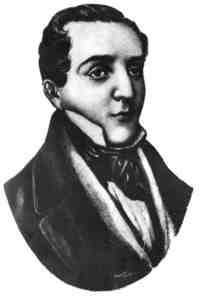

Por María de los Ángeles Polo
Si en septiembre pasado por razones obvias dedicamos nuestro segmento a grandes poetas chilenos, en este octubre muy justificadamente lo estaremos dedicando a poetas imprescindibles en la historia de la literatura cubana y, entre ellos sobresale con letras de oro el de José María Heredia, el cantor del Niágara y del Himno del desterrado, poeta cuyos versos no quedaron solo como formas literarias sino que captaron nuestros símbolos más entrañables fijando la estrella y la palma como emblemas de nacionalidad.
Nacido en la ciudad de Santiago de Cuba el 31 December of 1803 y fallecido en Toluca, Méjico el 7 may of 1839, tuvo una vida corta, agitada e intensa que lo llevó a residir indistintamente desde muy niño en Santo Domingo, Caracas, Matanzas, Havana, Mexico, y en los Estados Unidos, país este último al que tuvo que marchar precipitadamente, desterrado, luego de verse envuelto en la conspiración Soles y Rayos de Bolívar.
Según sus biógrafos, la primera edición de sus versos aparece en la ciudad de Nueva York en 1825 y en ese mismo año, la inmortalidad literaria con su obra cumbre, La Oda al Niágara. así como el Himno del desterrado, escrito cuando en travesía hacia Méjico vio desde el mar, las costas de Pinar del Río el 7 September of 1825.
Su Cuba, amada y prohibida.
Himno del desterrado
(fragmentos)
Reina el sol, y las olas serenas
Corta en torno la prora triunfante,
Y hondo rastro de espuma brillante
Va dejando la nave en el mar.“¡Tierra!” claman: ansiosos miramos
Al confín del sereno horizonte,
Y a lo lejos descúbrese un monte…
Le conozco… ¡Ojos tristes, llorad!Es el Pan… En su falda respiran
El amigo más fino y constante,
Mis amigas preciosas, mi amante…
¡Qué tesoros de amor tengo allí!Y más lejos, mis dulces hermanas,
Y mi madre, mi madre adorada,
De silencio y dolores cercada
Se consume gimiendo por mí.Cuba, Cuba, que vida me diste,
Dulce tierra de luz y hermosura,
¡Cuánto sueño de gloria y ventura
Tengo unido a tu suelo feliz! (…)
José María Heredia también es el autor del himno nacional mejicano, país que le dio asilo y lo acogió como a hijo propio.
Considerado uno de los mejores poetas cubanos de todos los tiempos, las obras de José María Heredia son extraordinarias composiciones descriptivas en las que plasma su percepción fina de la naturaleza que le rodea.
De él dijo el patriota Manuel Sanguily:”Fue un hombre representativo, exponente cabal de un estado, de un momento del espíritu cubano” y dijo más…” sintió intensamente la santa ambición de todos, la aspiración y el entusiasmo de todos, la idea impulsiva y sublime que agitó y enardeció a varias generaciones de cubanos, fue el alma misma de esa agrupación humana, y exhaló, de su corazón vibrante como el bronce de un combate, sus dolores y sus esperanzas, su desesperación y su amargura, revistiéndolos del esplendor de sus versos.
Y otro gran cubano como el sabio Enrique José Varona dijo de este poeta…”No fui yo solo, fueron todos los cubanos de mi generación los que aprendieron a sentir a Cuba, a ver sus notas peculiares, típicas en la obra de Heredia”.
Y en este mes, en el que rendimos especial homenaje a la cultura cubana quisimos, con sobradas razones detener nuestra mirada en ese gran poeta nuestro que es José María Heredia.


Recent Comments